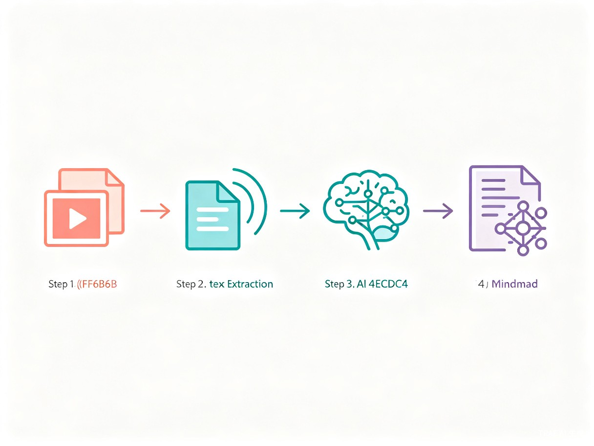
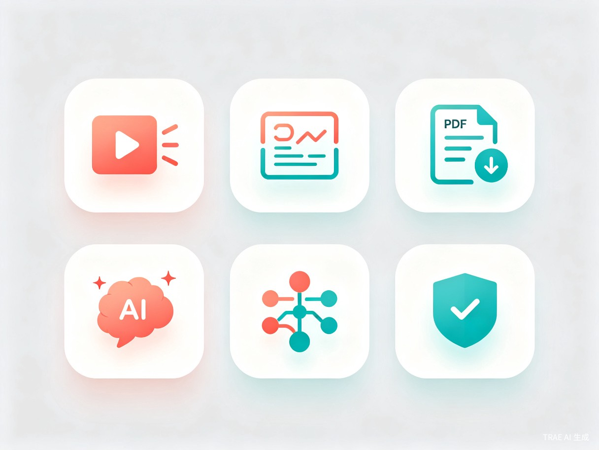

创意介绍
"刷到一个好视频，想把里面的金句提炼出来写篇稿子——光是'把视频里的文字弄出来'这一步，就要折腾好几种工具。做完这些，创作的热情已经消耗掉一半了。"
文抓抓是一款微信小程序，无需下载安装，打开即用。它解决的核心问题是：自媒体创作者在素材采集和文案生产环节效率低下、工具割裂。我们通过整合多源素材提取（视频、图片、PDF、网页链接）和 AI 驱动的文案生成能力，打造一个从"找素材"到"写文案"到"检查发布"的全流程工具。
多源素材提取
支持视频、图片、PDF、网页链接，一键识别提取文字内容
AI 文案创作
一键生成、改写、扩写、润色，输出有温度的高质量文本
智能辅助工具
脑图生成、SEO 优化、合规检测，覆盖创作全链路
产品工作流程
文抓抓将内容创作简化为四个清晰步骤，消除工具切换带来的效率损耗：

输入层
用户通过微信小程序上传视频、图片、PDF 文件，或粘贴网页链接。系统自动识别内容类型，无需手动选择提取方式。
处理层
AI 引擎对提取的原始文本进行智能分析，理解语义结构和关键信息，为后续创作提供结构化素材。
创作层
基于素材和用户指令，AI 生成初稿或对已有文本进行改写、扩写、润色。支持多种风格切换，保持个人表达特色。
输出层
一键生成思维导图梳理逻辑框架，自动检测 SEO 关键词布局和内容合规风险，确保文案可直接发布。
目标用户与痛点
核心用户群体
文抓抓面向所有依赖文字内容产出的创作者，主要包括：
- 小红书、抖音、公众号等平台的个人自媒体创作者
- MCN 机构的文案编辑和内容运营人员
- 需要频繁处理图文素材的知识博主和行业分析师
- 电商运营人员（商品描述、活动文案等场景）
当前痛点
在没有文抓抓的情况下，创作者面临以下困境：
- 素材提取靠拼凑 — 视频用截图 OCR 或录音转文字，图片单独识别，PDF 要打开电脑复制，网页内容手动筛选，一个任务切换四五个工具
- AI 文案"塑料感"重 — 通用 AI 生成的文案语气生硬、缺乏个人风格，读者一眼就能看出是机器写的
- 发布前没有安全网 — 文案直接发，事后才发现踩了广告法红线或平台违规词，轻则限流重则封号
- 工作流断裂 — 从"找素材"到"写文案"到"检查发布"，每个环节用不同工具，来回切换浪费时间，思路容易断
核心功能特性

视频文案提取
上传视频即可自动识别语音转文字，精准提取视频中的口播内容和字幕信息
图片 OCR 识别
截图或拍照上传，快速识别图片中的文字内容，支持多语言混合识别
PDF 文档解析
上传 PDF 文件，智能提取正文内容并保留段落结构，支持扫描件识别
AI 文案生成与润色
一键改写、扩写、润色文本，支持多种语气风格，让 AI 写出有温度的文案
AI 脑图生成
基于文案内容自动生成结构化思维导图，快速梳理内容框架和逻辑脉络
SEO 优化与合规检测
自动分析关键词布局、检测广告法违规词和平台敏感内容，降低发布风险
价值与意义
效率提升 核心价值
文抓抓把"素材提取 → 内容创作 → 优化检测"三个原本割裂的环节彻底打通。以前写一篇带素材的文案，光采集整理就要半小时起步，现在几秒提取文字、一分钟生成初稿。对于每天要产出多篇内容的创作者来说，省下来的时间可以多写两篇稿子，或者把更多精力放在选题和创意构思上。
商业价值 增长潜力
微信小程序生态拥有超过 9 亿月活用户，内容创作工具的需求持续增长。文抓抓切入的是一个真实存在的刚需场景——不是"锦上添花"而是"雪中送炭"。产品可以按功能模块分层付费（基础提取免费，AI 改写/脑图/合规检测按次或包月收费），商业模式清晰，用户付费意愿强。
社会价值 长期影响
降低内容创作门槛，让更多普通人能够高效产出优质内容。同时，合规检测功能帮助创作者规避法律风险，推动自媒体行业内容质量的整体提升。
技术方案概览
文抓抓基于微信小程序原生框架开发，后端采用云开发架构，核心 AI 能力依托大语言模型实现。整体技术选型注重轻量化和快速迭代：
前端
微信小程序原生开发，WXML + WXSS + JavaScript，配合自定义组件实现模块化
后端
微信云开发（CloudBase），Serverless 架构，按需扩缩容，降低运维成本
AI 引擎
接入大语言模型 API，支持文本生成、改写、摘要、关键词提取等多种 NLP 任务
素材解析
视频语音识别（ASR）、图片 OCR、PDF 文本抽取、网页内容解析，多通道并行处理